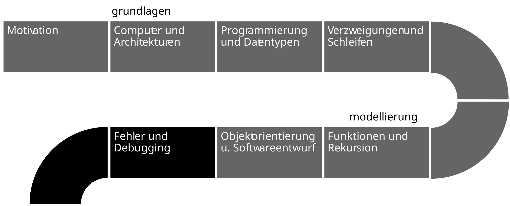
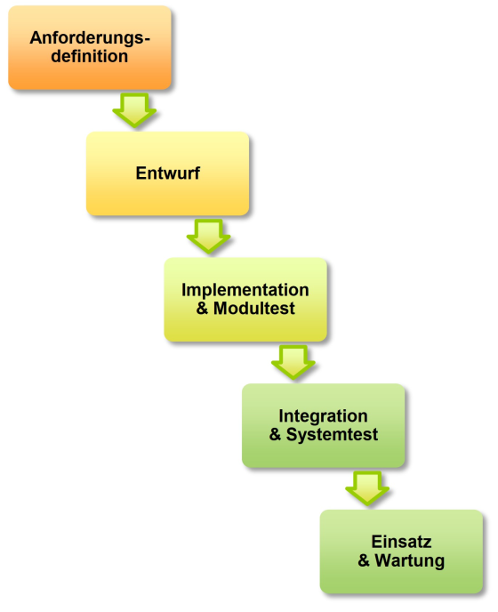
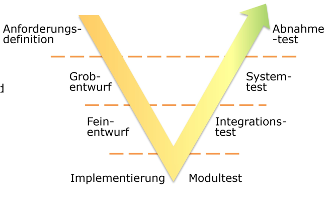
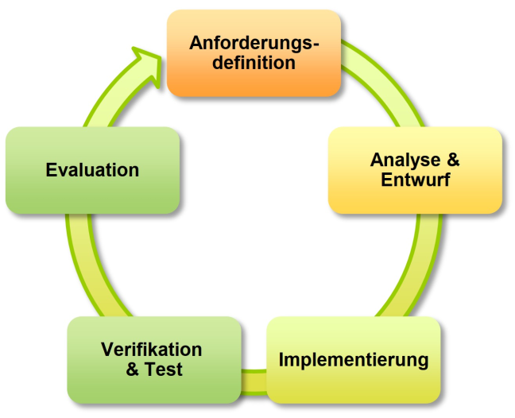
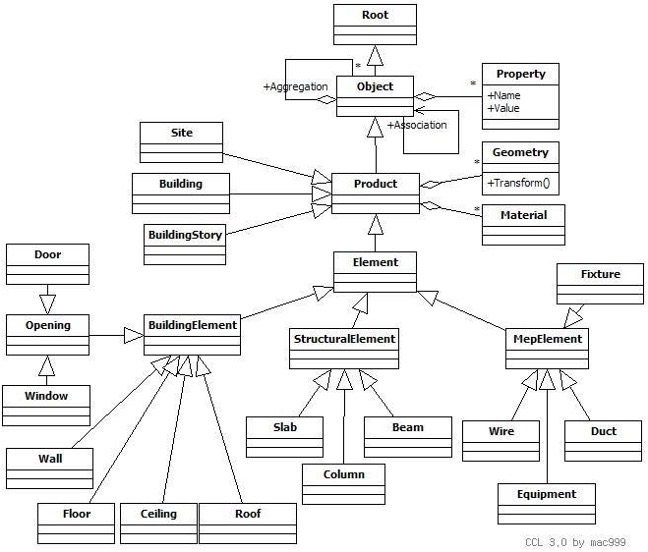

classDiagram
class Point{
+float x
+float distance(Point p)
}
Softwareentwurf
Joern Ploennigs · AI4SC
Midjourney: Waterfall in chinese mountain range
Hörsaalfrage
Was entsteht zuerst — Code oder Plan?
Ablauf

Die Lücke: Anforderung → Code
Anforderung
Auftraggeber sagt:
„Ich brauche ein Programm, das den Wasserverbrauch eines Gebäudes pro Raum berechnet.”
Entwickler braucht:
- Welche Klassen gibt es?
- Welche Attribute (mit Typen)?
- Welche Methoden (Signaturen)?
- Wie hängen die Teile zusammen?
Entwurf schließt die Lücke
Der Entwurf übersetzt eine Anforderung in eine strukturierte Programmbeschreibung — bevor Code geschrieben wird.
[1] Anforderung
↓ Entwurf
[2] Klassenmodell (UML)
↓ Implementierung
[3] Python Code
↓ Verifikation
[4] Fertiges ProgrammPhasen der Softwareentwicklung
Anforderungsdefinition – Was soll das Programm können?
Entwurf – Klassenmodell – Ausführungsplanung
Ausführung – Implementation der Klassen – Integration zur fertigen Lösung
Abnahme – Modultest – Integrationstest – Systemtest
Vergleich: Software- vs. Bauingenieurwesen
Softwareentwicklung
- Anforderung: Funktionen und Randbedingungen
- Entwurf: Klassenmodell, Ausführungsplanung
- Ausführung: Implementation + Integration
- Abnahme: Modul-, Integrations-, Systemtest
Bauingenieurwesen
- Ausschreibung: Funktionen und Randbedingungen
- Entwurf: Architektur, Fachplanung
- Ausführung: Einzelgewerke + Integration
- Abnahme: Gewerke-, Teil-, Gesamtabnahme
Welches Vorgehensmodell passt?
Vorgehensmodelle
Vier Modelle — je nach Projekttyp:
- Wasserfall — sequenziell, dokumentiert
- V-Modell — sicherheitskritisch, testbasiert
- Agil — iterativ, änderungsbereit
- Agentisch — KI implementiert, Mensch verifiziert
Entscheidungskriterien:
- Wie stabil sind die Anforderungen?
- Wie sicherheitskritisch ist die Software?
- Wie groß ist das Team?
- Stehen KI-Tools zur Verfügung?
Wasserfallmethode
Traditionelles Modell, oft in Ausschreibungen gefordert
Sequenzielle Phasen — jede Phase vollständig vor der nächsten
Planbar, gut dokumentierbar, ISO-9000-konform
Fehler werden spät entdeckt
Geeignet wenn: Anforderungen stabil, formale Ausschreibung

V-Methode
Primär für sicherheitskritische Software (Auto, Flugzeug, Tunnel)
Separiert Entwicklung (links) und Testaktivitäten (rechts)
Tests werden schon im Entwicklungsarm definiert
Systematische Qualitätssicherung, hohe Testabdeckung
Aufwendiger als andere Modelle
Geeignet wenn: Tunnelsteuerung, Kläranlagen-SCADA

Agile Methode
Iterative Entwicklung mit regelmäßigen Releases (~alle 3 Monate)
Startet mit MVP (Minimal Viable Product)
Flexibel, frühes Feedback, änderungsbereit
Frühe Entwurfsfehler können Neuentwurf erzwingen
Geeignet wenn: Anforderungen unklar oder sich ändernd

Agentischer Entwicklungs-Loop
Agentischer Loop
KI übernimmt die Implementierungsphase — der Ingenieur steuert und verifiziert:
- Prompt = Anforderungsspezifikation
- Generate = Implementierungssprint (KI)
- Verify = Verstehen & Testen (Mensch)
- Iterate = Prompt verfeinern
Kernkompetenz: Verstehen und Verifizieren
Prompt
(Anforderung formulieren)
↓
Generate
(KI implementiert)
↓
Verify
(Mensch versteht & testet)
↓
Iterate ←─────────┘
(Anforderung verfeinern)Vier Vorgehensmodelle im Vergleich
Wasserfall
- Sequenziell
- Dokumentiert
- Stabile Anf.
V-Modell
- Testbasiert
- Sicherheit
- Hohe Qualität
Agil
- Iterativ
- Flexibel
- Schnell
Agentisch
- KI generiert
- Prompt = Spec
- Verify = Kern
UML — Entwurfssprache für Software
UML Klassendiagramme
UML (Unified Modelling Language) ist ein ISO-Standard zur Beschreibung von Softwareentwürfen.
Wird genutzt für:
- Entwurf und Ausschreibung
- Implementation und Dokumentation
- Kommunikation im Team
Wichtigste Diagrammtypen:
- Klassendiagramm — Klassen- und Datenstruktur
- Programmablaufplan — Algorithmen
- Sequenzdiagramm — Interaktionen
- Use-Case-Diagramm — Nutzfälle
UML Klasse — Aufbau
Klassen & Methoden
Eine Klasse besteht aus drei Ebenen:
- Klassenname (oben)
- Attribute mit Datentyp (mitte)
- Methoden mit Signatur (unten)
Attribut- und Methoden-Notation
Attribute:
attributname: TypBeispiele:
name: str
area: float
rooms: list[Room]Methoden:
method(param: Typ) RückgabetypBeispiele:
calculate_area() float
get_rooms() list[Room]
add_room(r: Room)UML Klassendiagramm
Das am häufigsten verwendete Diagramm im objektorientierten Modellieren
Im Klassendiagramm werden modelliert:
- Klassen mit: Attributen, Methoden
- Beziehungen zwischen Klassen
- Hierarchien und Vererbungen
Multiplizität
Zahlen an Pfeilen geben die Multiplizität an — wie viele Objekte in Relation stehen:
| Notation | Bedeutung |
|---|---|
1 |
Genau eins |
0..* |
Null oder mehr |
1..* |
Ein oder mehr |
0..1 |
Keins oder eins |
classDiagram
class Point{
+float x
+float y
+distance(Point)
}
class Line {
+length()
}
Line "1" o-- "2" Point : start, endVererbung
- Gleiche Objekte teilen oft ähnliche Eigenschaften und Methoden
- Vererbung erlaubt Definieren von Unterklassen und Oberklassen
- Unterklasse erbt alle Attribute und Methoden der Oberklasse
- In UML: Referenz mit gefülltem Dreieck “▲” bei der Oberklasse
classDiagram
direction BT
class Polygon
Polygon: +area()
Polygon: +\_\_str\_\_()
class Triangle
class Tetragon
class Pentagon
Triangle --|> Polygon
Tetragon --|> Polygon
Pentagon --|> Polygon
Klassendiagramm — Gesamtbeispiel
Klassendiagramme können groß werden
Sie stellen das (Daten-)Modell dar
classDiagram
%% Base geometry classes
class Point {
+float x
+float y
+distance(Point)
}
class Line {
+length()
}
class Polygon {
+area()
+__str__()
}
%% Composition relationships
Polygon "1" o-- "3" Point : points
Line "1" *-- "2" Point : start, end
%% Inheritance hierarchy from Polygon
Polygon <|-- Triangle
Polygon <|-- Tetragon
Polygon <|-- Pentagon
Triangle <|-- Scalene_Right
Triangle <|-- Scalene_Obtuse
Triangle <|-- Scalene_Acute
Scalene_Right <|-- Isosceles_Right
Scalene_Obtuse <|-- Isosceles_Obtuse
Scalene_Acute <|-- Isosceles_Acute
Isosceles_Acute <|-- Equilateral
Tetragon <|-- Trapez
Tetragon <|-- Parallelogram
Parallelogram <|-- Rectangle
Rectangle <|-- Square
Tetragon <|-- Kite
Kite <|-- Rhombus
BIM Beispiel — Schritt 1: Anforderung formulieren
BIM Beispiel
Auftraggeber formuliert:
„Ein Gebäude hat mehrere Räume. Jeder Raum hat einen Namen, eine Fläche und eine Liste von Fenstern. Ein Fenster hat eine Breite und Höhe. Das Programm soll die Gesamtfensterfläche eines Raumes berechnen.”
Ingenieursfragen für den Entwurf:
- Welche Klassen brauchen wir?
- Welche Attribute mit welchen Typen?
- Welche Methoden mit Signaturen?
- Welche Beziehungen zwischen Klassen?
→ Diese Fragen beantwortet das UML-Diagramm
BIM Beispiel — Schritt 2: Anforderung → UML
classDiagram
class Building {
name: str
address: str
get_rooms() list[Room]
}
class Room {
name: str
area: float
get_window_area() float
}
class Window {
width: float
height: float
get_area() float
}
Building "1" --> "1..*" Room : enthält
Room "1" --> "0..*" Window : hatBIM Beispiel — Schritt 3: UML → KI-Prompt → Verifizieren
KI-Prompt (aus UML abgeleitet):
Erstelle Python-Klassen für
Building,RoomundWindow. Building enthält eine Liste von Rooms. Room hatname: str,area: floatund eine Liste von Windows. Window hatwidth: float,height: floatundget_area() -> float. Room hatget_window_area() -> float.
Verifikation gegen UML:
- ✓ Alle drei Klassen vorhanden?
- ✓ Attribute mit korrekten Typen?
- ✓ Methoden-Signaturen korrekt?
- ✓ Beziehungen implementiert?
- ✓ Multiplizität berücksichtigt?
Anwendungsbeispiel — BIM (Building Information Models)
- Bauzeichnungen werden heutzutage als IFC (Industry Foundation Class) gespeichert
- IFC ist ein objektorientiertes Modell mit Vererbung, Spezialisierung und Generalisierung
- Es wird u.a. in UML dokumentiert

Questions
Softwareentwurf – Ingenieursinformatik Softwareentwurf – Ingenieursinformatik Softwareentwurf – Ingenieursinformatik Ingenieursinformatik

Artificial
Intelligence